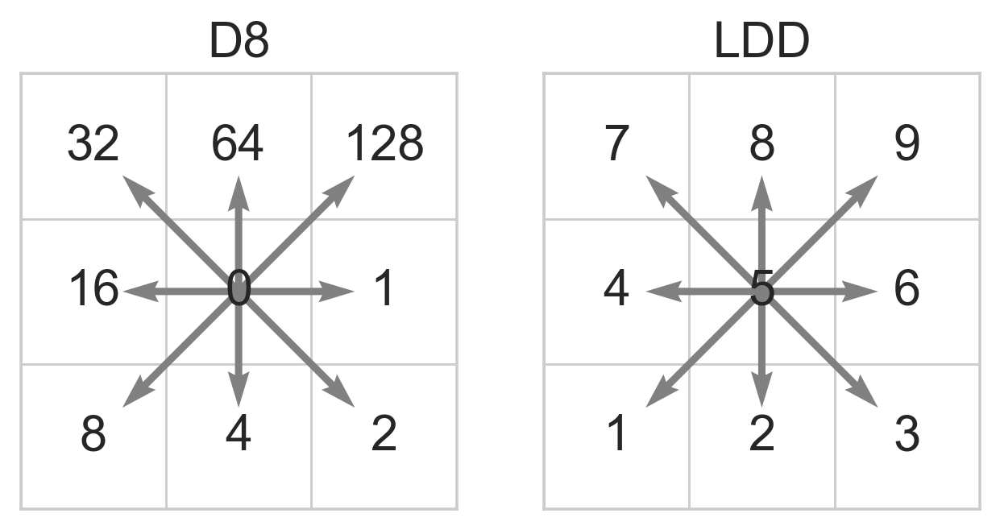

Flow direction data
The FlwdirRaster object is at the core of the pyflwdir package. It contains gridded flow direction data, parsed to an actionable common format which describes the linear index of the next dowsntream cell.
Currently we support two local flow direction (D8) data types according to the arcgis D8 and pcraster LDD conventions (see figure), and one global flow direction type according to the CaMa-Flood NEXTXY convention. Local flow direction data types describe the next downstream cell based on a relative direction from a cell towards one of its neighboring cells, while global flow direction types describe the next downstream cell based on its row and column indices.

We read the flow direction raster data, including meta-data, using rasterio
[1]:
import rasterio
with rasterio.open("rhine_d8.tif", "r") as src:
flwdir = src.read(1)
transform = src.transform
crs = src.crs
latlon = crs.to_epsg() == 4326
Next, we parse this data to a FlwdirRaster object, the core object to work with flow direction data. In this step the D8 data is parsed to an actionable format.
NOTE: that for most methods a first call might be a bit slow as the numba code is compiled just in time, a second call of the same methods (also with different arguments) will be much faster!
[2]:
import pyflwdir
flw = pyflwdir.from_array(
flwdir, ftype="d8", transform=transform, latlon=latlon, cache=True
)
[3]:
# When printing the FlwdirRaster instance we see its attributes.
print(flw)
{'ftype': 'd8',
'idxs_ds': array([-1, -1, -1, ..., -1, -1, -1], dtype=int32),
'idxs_pit': array([20994], dtype=int32),
'idxs_seq': None,
'latlon': True,
'nnodes': 349847,
'shape': (682, 997),
'transform': Affine(0.008333333333325754, 0.0, 3.5666666664997138,
0.0, -0.008333333333339965, 52.00833333330708)}
We can than make use of the many methods of the FlwdirRaster object, see FlwdirRaster API.
To visualize the flow directions we derive the stream network as vector using the streams() method. Each line element respresnets a stream segment with a minimal Strahler stream order of min_sto, as computed by stream_order(). The line elements (geo features) are parsed to a GeoDataFrame object for visualization.
[4]:
import geopandas as gpd
feats = flw.streams(min_sto=4)
gdf = gpd.GeoDataFrame.from_features(feats, crs=crs)
gdf.head()
[4]:
| geometry | idx | idx_ds | pit | strord | |
|---|---|---|---|---|---|
| 0 | LINESTRING (8.79583 46.57917, 8.80417 46.58750... | 649674 | 635723 | False | 4 |
| 1 | LINESTRING (8.71250 46.65417, 8.72083 46.66250... | 640691 | 635723 | False | 4 |
| 2 | LINESTRING (8.17917 46.57083, 8.18750 46.57083... | 650597 | 634651 | False | 4 |
| 3 | LINESTRING (8.88750 46.77917, 8.88750 46.77083... | 625757 | 632737 | False | 4 |
| 4 | LINESTRING (8.85417 46.69583, 8.86250 46.69583... | 635723 | 632737 | False | 5 |
[5]:
# plot
import numpy as np
from utils import quickplot, colors, cm # data specific quick plot method
# key-word arguments passed to GeoDataFrame.plot method
gdf_plot_kwds = dict(
column="strord", cmap=colors.ListedColormap(cm.Blues(np.linspace(0.4, 1, 7)))
)
# plot streams with hillshade from elevation data (see utils.py)
ax = quickplot(gdfs=[(gdf, gdf_plot_kwds)], title="Streams")